10. Barra de herramientas "Propiedades de objetos".
La barra de herramientas "Propiedades de objetos" tiene el siguiente aspecto:
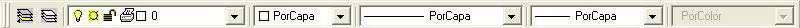
Crear capas
Cuando explicamos cómo podía cambiarse un color, dijimos que esto iba bien para diferenciar entidades. De todas formas, a menudo es muy interesante ocultar algunos colores o entidades. Las capas funcionan como grupos de objetos que pueden mostrarse, ocultarse, etc. Imagínate una planta de un edificio donde los muebles están creados con una capa, los tabiques con otra, etc. De esta forma podemos ocultar sólo los mueble y mostrar o imprimir sólo los tabiques.
Es conveniente asignar una capa a cada grupo de objetos (dibujos, ejes, cotas...) para después poder manejarlos por separado.
1. Haz clic en el segundo botón de la barra de herramientas de capas
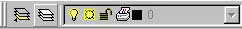
Aparece el cuadro de diálogo Administrador de propiedades de capas. El espacio central muestra los nombres y las propiedades de todas las capas disponibles. Nosotros podemos crear nuevas capas y asignarles propiedades como el estilo de línea, color, grosor, etc.
2. Clic en el botón Nueva y escribe como nombre de la nueva capa: Ejes
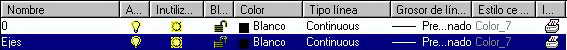
3. Pulsa doble clic sobre el nombre del color.
4. Selecciona el rojo y acepta.
5. Pulsa doble clic sobre el tipo de línea.
De momento sólo podemos ver los tipos de línea Continuos que son los que ya están cargados.
6. Pulsa el botón Cargar
7. Selecciona el tercer tipo (ISO trazo largo, punto) y acepta.
8. Selecciona el tipo que acabamos de elegir y acepta.
9. Vuelve a aceptar para salir a la zona de trabajo.
1. Abre la lista de las capas y selecciona la capa Ejes
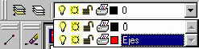
2. Dibuja un par de líneas en forma de cruz.
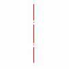
3. Cambia a la capa 0.
4. Dibuja un círculo con el centro en el medio de los dos ejes.
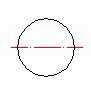
5. Abre la lista de capas y selecciona el primer botoncito (bombilla) de forma que se apague.
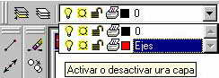
6. Pulsa clic en medio de la zona de dibujo.
- Inutilizar/Reutilizar: las capas inutilizadas no son visibles. La ventaja es que en dibujos grandes, estas capas no se regeneran junto a las demás, lo que puede ralentizar la regeneración del dibujo en la pantalla.
- Bloquear/desbloquear: aunque no afectan a la visibilidad, no se pueden editar.
- Permitir/impedir impresión: permite imprimir o no las capas seleccionadas.
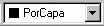
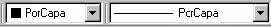
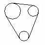
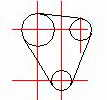
1. Cambia a color rojo y dibuja una primera línea vertical
2. Utiliza el comando COPIA para copiar esa misma línea 16 unidades hacia la derecha.
3. 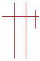Copia esta última línea 13 unidades más hacia la derecha.
4. Dibuja una línea horizontal.
5. Cópiala 35 unidades hacia abajo.
6. Cambia a color negro.
7. Dibuja círculos tomando como punto central las intersecciones de los ejes.
8. Finalmente, dibuja líneas tangentes entre círculos.